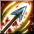
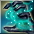
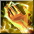
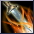

Magus
A TierOverview
| Role | DPS / Subheal |
| Difficulty | Intermediate |
| Strengths | Huge AoE DoT damage and powerful single target |
| Weaknesses | Low HP pool; high threat skills makes it hard to play within Parties |
| Why Play It | Channel the forces of nature as a druid-like caster, wielding earth, fire, and wind to devastate entire groups of enemies |
Skills
Passives
- Cyclone Lord's Blessing your main skill in gear
- Mental Link
Single Target
- Explosion of Petrifaction
- Tectonic Spike
 Scorching Flame
Scorching Flame- Shackle of the Ground
- Bleak Squall
AoE Spells
- Eternal Pillar of Fire
- Root of Mother Nature

Vacuum Shockwave- Spear of Flame
- Huge Rock Fall
Utility
- Tears of Gaia free revive while keeping your buffs
- Enchant Weapon: Water
- Focused Gust
- Arcane Swell

Recklessness of Earth
Recklessness of Thunder- Recklessness of Fire
 Recklessness of Water
Recklessness of Water
Gameplay
Weapon choice: Cyclone Lord's Blessing converts P.Atk to M.Atk. Combined with Two-Handed Axe Training and Tactical Advantage

, a 2H Axe is the obvious weapon choice (this may change at level 220+, to be confirmed).Basic rotation: Pull mobs with Bleak Squall → stack mobs → cast Root of Mother Nature to root them in place → then unleash your AoEs: Eternal Pillar of Fire , Vacuum Shockwave , Spear of Flame .
Once your damage is high enough, alternate between Eternal Pillar of Fire and Root of Mother Nature across pulls, both have huge damage modifiers, so using both in the same pull wastes potential.
Magus is the only class that benefits enormously from summoning a pet thanks to Mental Link , which lets you inherit INT and Wisdom from your summoned pet. This is why Ethereal Pixie is a must-have and will boost your damage by an insane amount.
Talent Build
| Points | Allocation |
|---|---|
| 5 TP | 2 | 3 | 0 |
| 6 TP | 2 | 3 | 1 |
| 7 TP | 2 | 3 | 2 |
Stats
| Priority | Stats |
|---|---|
| Damage | Critical Rate, Critical Power (CP), STR → ordered by priority |
| Defense | Vitality → more Vitality means more HP and P.Def |
Accessories
| Setup | Accessories |
|---|---|
| Damage | Rings with 40+ STR / 20+ CP, the 3rd stat could be movement speed, M.Acc, or M.Atk depending on what you need. |
| Defense | Rings with 40+ Vitality / 20+ CP, the 3rd stat could be movement speed, M.Acc, or M.Atk depending on what you need. |
Pets & Belt
| Slot | Recommendation |
|---|---|
| Early Setup | 2 Kenta + 2 Naga |
| Normal Setup | 3 Salamander S5 + M.Hector card |
| Full Setup | 3 White Dragons S1 + 2 Kenta + Reviac, Devil Skeleton, Troll Hunter boss cards |
| Summoned Pet | Ethereal Pixie |
Gear
Progression Path
- R2 helmet +20 (all skills +1)
- R6 +15 gear from hidden sanctuary
- Circus weapons and accessories from Circus dungeon
- Parallel World gear (either trash stats 2 slots with your main skill, or max slots in each gear but trash skill, depends on what you could find)
- Island of gods weapons and rings
- DD Accessories and Yushiva belt
- Lava gear (boots, gloves, armor, helmet)
- Medal
- Emblem
Optimization
You upgrade the above when it's applicable e.g., more slots in belt, +24 weapon, +24 medusa helmet, better stats on gear.
Example of purple stats you look for:
- Evasion and movement speed on boots | Evasion or CP on armor, Emblem, Medal
- M.accuracy on gloves, medal or emblem
| Stat Targets & Item Stat Info | |
|---|---|
| M.accuracy Target | |
| RoA | 1000+ M.accuracy |
| Hidden RoA | 1200+ M.accuracy |
| DD6 (level 180) | 1500+ M.accuracy |
| SF (level 200) | 2000+ M.accuracy |
| Item Stat Examples | |
| M.accuracy | ~200+ on gloves, emblem, or medal |
| Crit power | ~11+ on gloves, emblem, medal |
| Evasion | ~160+ on boots, armor, medal, or emblem |
| Movement Speed | ~17+ on boots, 30+ on rings |
| You can find the exact min/max stats on the Discord channel (to be imported here soon). | |
Titles
- Title for Reduced Damage: Camper
(Purchase a tent from Merchant in Hidden Village) - Titles from Underground Dungeons Stage 4:
Title Location Intelligence Wisdom Akt IV, Scene IV Presto Palmir Plateau +28 +23 Akt IV, Scene IV Vivace Palmir Plateau +23 +19 Akt IV, Scene IV Moderato Palmir Plateau +19 +16 Akt IV, Scene III Presto Crystal Valley +22 +18
Leveling Progression
Tips
- Kiting is very important with this class — prioritize movement speed in rings.
- Stage Ethereal Pixie to Stage 5 as soon as possible and equip a Yushiva belt on her — huge boost to your M.Atk.
- Hector level 2 potion is the best potion to boost your M.Atk.
- Always keep healing DoT and healing spells ready in case you get hit.
- If you have trouble stacking mobs, keep circling around them until they are all in one place for Root of Mother Nature.
- Use all Recklessness skills and Arcane Swell during boss encounters for a significant damage burst.
Endgame
| Aspect | Rating |
|---|---|
| Performance | 9/10 |
| Solo Ability | 9/10 |